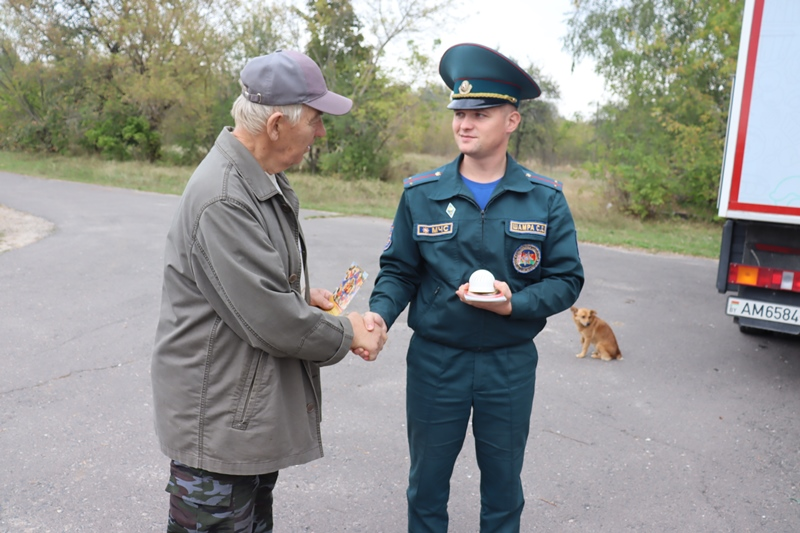

Пе́триков (бел. Петрыкаў) — город в Гомельской области Республики Беларусь. Административный центр Петриковского района. Численность населения — 10 303 человек (на 1 января 2023 года). В 2023 году Петриков отметил 500-летие
Непременными атрибутами, которые сопровождают все изображения этого апостола, являются два ключа, серебряный и золотой. Они, вместе с тем, являются символом закрытого, укрепленного города. Передача ключа от осажденного города врагам была выражением капитуляции перед завоевателем.
В рамках акции «С заботой о безопасности малой родины» работники Петриковского районного отдела по чрезвычайным ситуациям посетили малые населенные пункты, проезжая по маршруту следования автолавки.
В Петриков имеется: